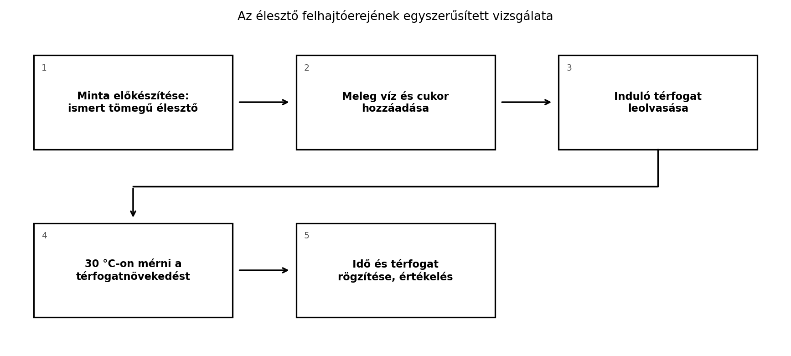
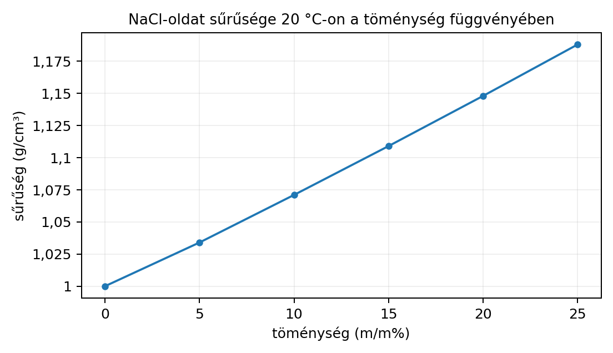

A pékségben az élesztő, a sóoldat és a tojás minőségét nem elég „ránézésre” megítélni. A hibás élesztő miatt lapos és tömör lesz a termék, a rosszul beállított sóoldat felborítja az erjedést, a frissen nem ellenőrzött tojás pedig szennyezheti a munkafelületet vagy a kész tésztát. Ebben az alfejezetben olyan egyszerű, kisüzemi és laboratóriumi alapvizsgálatokat tanulunk, amelyekkel ezt a három fontos nyersanyagot gyorsan ellenőrizni lehet.
Képzeljünk el egy hajnali pékséget. A pék beérkezik, előveszi az élesztőt a hűtőből, és azt gyanítja, hogy a csomagolás megsérült. A pék nem ránézésre dönt, hanem gyors vizsgálatot végez: az élesztőt meleg vízben cukorral elkeveri, és nézi, hogy a folyadék felszíne milyen gyorsan emelkedik. Közben a sóoldatot is ellenőrzi: fokolót enged a tartályból vett mintába, és leolvassa a sűrűséget. Mielőtt a tojást feltöri a tésztához, egy erős lámpa elé teszi, hogy kiszűrje a repedt, vérfoltos vagy öreg tojásokat. Ezek a gyors vizsgálatok néhány perc alatt megelőzik az egész napi termékhibát.

Definíció. Az élesztő felhajtóereje az a tulajdonság, amely megmutatja, hogy a vizsgált sütőélesztő meghatározott hőmérsékleten és tápanyag-koncentráció mellett milyen gyorsan és milyen mértékben fejleszt szén-dioxidot, azaz hogyan emeli meg a mérőedényben lévő tészta térfogatát.
Definíció. A sóoldat tömegszázalékos töménysége azt adja meg, hogy 100 g sóoldatban hány gramm étkezési só (NaCl) van oldva. Képlettel:
A sóoldat sűrűsége az oldat tömegének és térfogatának hányadosa. A sűrűség a koncentrációval nő, ezért a mért sűrűségből a töménység táblázat segítségével megállapítható.
Szabály. A sűrűségmérést fokolóval vagy areométerrel végezzük. A leolvasás a folyadék meniszkuszának alsó pontján történik, és mindig feljegyezzük a minta hőmérsékletét. A sóoldat vizsgálatakor a mérési edény tiszta, a minta hőmérséklete pedig lehetőleg a fokoló kalibrációs hőmérsékletéhez (gyakran 20 °C) közeli legyen.
Definíció. A tojás frissessége azt jelenti, hogy a tojás megőrizte eredeti belső szerkezetét: a légkamra kicsi, a sárgája domború és középen álló, a tojásfehérje sűrű, a szaga kellemes, és a héj épsége, tisztasága megfelelő.
A felhajtóerő vizsgálat célja annak eldöntése, hogy az élesztő elegendően aktív-e a kívánt tésztához. Az alábbi egyszerűsített módszer laboratóriumi mérőhengerrel vagy osztott mérőedénnyel végezhető, és a tanulás célját szolgálja.
HACCP. A vizsgálat kritikus pontja a minta-előkészítés: a használt edények legyenek tiszták, a minta ne érintkezzen nyers tojással vagy más szennyező anyaggal. Az élesztős tészta 30 °C körül marad, ezért a vizsgálat ideje alatt a baktériumok is szaporodhatnak; a maradékot ne öntsük vissza az élesztőtartályba. A mérési pontok mögött a pékség HACCP-terve szerinti monitoringot kell vezetni (ellenőrizendő: üzemi utasítás).
Lépések.
Példa. A tészta kiinduló térfogata . A vizsgálat során 30 perc alatt elérte a -t. Ez azt jelenti, hogy a térfogat több mint megduplázódott, tehát az élesztő aktív. Ha 60 perc alatt alig mozdult volna, a minta gyanús.
Megjegyzés. Ez egyszerűsített összehasonlító próba (a referenciaélesztővel párhuzamosan értékelendő), és nem helyettesíti a hivatalos, szabványos sütőélesztő-vizsgálatot. Az elfogadási határértékeket a gyártói adatlap vagy a laboratóriumi utasítás adja meg (ellenőrizendő: a beszállítói specifikáció).
A sóoldat sűrűségét fokolóval mérjük. A fokoló egy keskeny üvegeszköz, amelyen -ben vagy -ben kalibrált skála van. A mérés menete:
Az alábbi ábra bal oldala a helyes mérést mutatja: függőleges mérőhenger a sóoldattal (1), a falhoz nem érő, szabadon lebegő fokoló (2), a minta hőmérsékletét mutató hőmérő (3), és a folyadékfelszín magasságában tartott szem (4). A nagyított részleten a leolvasási vonal a meniszkusz alsó pontján, a sík folyadékfelszín szintjén húzódik; a példában 1,109 g/cm³, ami a lenti táblázat szerint 15%-os oldat.
A jobb oldali két kép a leggyakoribb hibákat mutatja: (a) ha a henger ferde, a fokoló a falhoz ér, és a súrlódás miatt nem a valódi mélységig merül; (b) felülről nézve a meniszkusz más skálaértéknél látszik (parallaxishiba). Mindkét esetben hamis töménységet olvasunk le. A HTML-kiadásban a helyes és a hibás nézet gombbal váltható.
Gépbiztonság. A fokoló üvegből készül, éles törött vége sérülést okozhat. Tartsuk élelmiszerektől elkülönítve, használat után öblítsük le, és ne tegyük mosogatógépbe más eszközökkel együtt, mert eltörhet. A törött üvegszilánk idegenanyag-kockázatot jelent.
Az alábbi táblázat egyes NaCl-oldatok sűrűségét mutatja -on. Az értékek tájékoztató jellegűek, nem szabványosak (ellenőrizendő: a tényleges táblázat a használt fokolóhoz és a sóoldat hőmérsékletéhez).
| Töménység w (m/m%) | Sűrűség (g/cm³) | Megjegyzés |
|---|---|---|
| 0 | 1,000 | tiszta víz |
| 5 | 1,034 | híg sóoldat |
| 10 | 1,071 | gyakori előoldat |
| 15 | 1,109 | gyakori tömény sóoldat |
| 20 | 1,148 | tömény sóoldat |
| 25 | 1,188 | nagyon tömény, hidegen is sűrű |

A grafikonról azt látjuk, hogy a sűrűség és a töménység közel arányosan növekszik. A mérési pontokkal való pontos leolvasás után a töménységet a táblázatból határozzuk meg.
Számítás.
1. példa. A fokoló értéket mutatott -on. Mekkora a sóoldat tömegszázalékos töménysége?
Megoldás: A táblázatból a -hez tartozik. Tehát a sóoldat -os.
2. példa. Hány kilogramm só van -os sóoldatban?
Számítás: - Sűrűség: - Oldat tömege: - Só tömege: ∎
3. példa. Egy sóoldat fokolója -t mutatott. A táblázat szerint ez körülbelül -nak felel meg (a -hoz tartozó és a -hoz tartozó közötti interpoláció). A oldathoz mennyi sót kell adni, hogy -os legyen?
Számítás: - Jelenlegi oldat tömege: , - - Jelenlegi sótartalom: - Jelölje a hozzáadandó só tömegét. A cél: . - Egyenlet: - - - Ellenőrzés: , azaz . ∎
A tojásokat három gyors módszerrel vizsgálhatjuk: átvilágítással, úsztatással és feltöréssel.
Higiénia. A tojás a Salmonella baktérium lehetséges hordozója. A vizsgálathoz használjunk tiszta edényt, a felületeket utána fertőtlenítsük, és mossunk kezet. A tojást nem szabad mosni, mert a mosás a héj pórusain keresztül a baktériumokat a belső részbe juttathatja. A feltört tojás levét csak azonnal, hűtve szabad felhasználni.
Allergén. A tojás a 1169/2011/EU rendelet szerinti allergén. A vizsgáló eszközöket tojásmentes termékhez ne használjuk tisztítás nélkül, mert a tojáslé fehérjéi keresztszennyezést okozhatnak.
Átvilágítás. Erős fényforrás elé tartva a tojást megfigyeljük a légkamra méretét, a sárgája helyzetét és a héj repedéseit. Friss tojásnál a légkamra kicsi, a sárgája árnyéka elmosódott, a héj ép. Öreg tojásnál a légkamra nagy, a sárgája elmozdul, a héjon hajszálrepedések lehetnek.
Úsztatás. Az úsztatás csak mintavételi vizsgálat: a megúsztatott tojást azonnal fel kell törni és megvizsgálni, vagy selejtezni; a gyártásra szánt tojást nem merítjük vízbe (ugyanaz a kockázat, mint a mosásnál: a hideg vízbe merített tojás a héj pórusain át vizet és baktériumot szívhat be). Egy tiszta edénybe hideg vizet teszünk, és óvatosan belehelyezzük a mintaként kiválasztott tojást. Ha a tojás az edény alján fekve marad, friss. Ha a tojás az alján áll, de a tompa vége felfelé emelkedik, már öregebb. Ha a tojás lebeg, nagy a légkamrája, ezért romlott vagy erősen öreg.
Feltörés. A tojást egy elkülönített, tiszta tálba ütjük, és szagát, állagát nézzük. Friss tojás: a sárgája magasan domború, a tojásfehérje két rétegre válik (sűrű és híg fehérje), a szaga kellemes. Öreg vagy romlott tojás: a sárgája lapos, a fehérje hígul, a szaga savanyú vagy kénhidrogénes. Ha a tojás vérfoltos, nem feltétlenül romlott, de a felhasználás előtt el kell dönteni az üzemi szabályzat szerint.
A három módszer eredményét az alábbi ábra veti össze: soronként az átvilágítás, az úsztatás és a feltörés képe, oszloponként a friss, az idősebb és a nem felhasználható tojás.
Egy oszlopon belül a három kép ugyanarra az okra vezethető vissza: a tárolás alatt a tojás nedvességet veszít a héj pórusain át, ezért a légkamra a tompa végen nő – ettől emelkedik fel a tompa vége a vízben –, közben a fehérje hígul, és a sárgája ellaposodik. Ha a három módszer eltérő eredményt ad, a szigorúbbat kövessük. A HTML-kiadásban a frissesség csúszkával állítható, és mindhárom kép együtt változik.
A vizsgálati eredményeket naplóban rögzítjük. A dokumentum tartalmazza a mintavétel időpontját, a nyersanyag megnevezését, a beszállítói tétel azonosítóját, a vizsgálat körülményeit (hőmérséklet, idő), a mért értékeket, az értékelést, a felhasználhatóságról szóló döntést és a vizsgáló nevét. A dokumentáció a nyomonkövethetőség és a HACCP-rendszer része.
HACCP. A mérési dokumentumokat meg kell őrizni a jogszabályban vagy az üzemi utasításban meghatározott ideig (ellenőrizendő: a pékség HACCP-terve). A mérés során észlelt eltérés esetén a tételt el kell különíteni, és a nyersanyagot nem szabad felhasználni addig, amíg a minőségügyi felelős nem dönt.
Egy kisebb pékségben a pék reggel azt tapasztalta, hogy a kenyerek nem kelnek meg rendesen. A kelesztőkamra hőmérséklete megfelelő volt. A pék megvizsgálta az élesztőt: kisebb élesztős tésztapróbát készített mérőhengerben, és megmérte, mennyi idő alatt duplázódik meg a térfogat. A várt 30–35 perc helyett több mint egy óra alatt is alig emelkedett a minta. A sóoldat fokolóval mért sűrűsége ugyanakkor volt, ami a táblázat szerint csak -os oldat, a megszokott helyett, ezért a tészta erjedése is túl gyors vagy szabályozatlan lehetett. A hiba oka az volt, hogy az élesztőt rosszul tárolták (a hűtő ajtaja nem záródott), a sóoldatot pedig valaki vízzel túlhígította. A megoldás: friss élesztő és helyes töménységű sóoldat használata, a tároló hőmérsékletének ellenőrzése. A dokumentálásnak köszönhetően vissza lehetett keresni, mikor került a hibás tétel a gyártásba.
Cél: az élesztő felhajtóerejének, a sóoldat töménységének és a tojás frissességének laboratóriumi, illetve üzemi ellenőrzése.
Eszközök és anyagok: friss préselt élesztő, cukor, meleg víz, tiszta mérőhenger, mérleg, hőmérő, óra, fokoló vagy areométer, sóoldat-minta, egész tojások, erős lámpa, átlátszó edény hideg vízzel, tiszta tálak, munkaruha, gumikesztyű, kézmosó.
Higiénia. A vizsgálat előtt vegyünk fel tiszta munkaruhát és hajhálót, vegyük le az ékszereket, mossunk kezet. A munkafelületet előtte tisztítsuk és fertőtlenítsük. A tojással végzett művelet után a felületet ismét fertőtleníteni kell.
Gépbiztonság. A vizsgálathoz nem használunk gépet, de a fokolót üvegtörés-veszély miatt óvatosan kezeljük. A forró víz égési sérülést okozhat, ezért a meleg vizet keveréssel hűtsük -ra, és ne öntsünk egyszerre forró vizet a mérőhengerbe.
Számozott lépések.
Ellenőrzési pontok. Az élesztőnek 30–40 perc alatt legalább meg kell dupláznia a próbatészta térfogatát (tanulási érték, referenciaélesztővel párhuzamosan; ellenőrizendő: gyártói specifikáció). A sóoldat sűrűségének meg kell egyeznie az előírt töménységhez tartozó értékkel. A tojásnak hideg vízben az edény alján kell feküdnie, feltörve pedig friss illatúnak kell lennie.
Tipikus hibák. A mérőhenger nincs függőlegesen; az areométer hozzáér a falhoz; a tojást mosás után vizsgáljuk; a gyártásra szánt tojást vízbe merítjük; a minta hőmérsékletét nem rögzítjük; az eredményeket nem írjuk le azonnal.
Termék: sóoldat ellenőrzési lap (nem élelmiszer-termék).
| Jellemző | Érték vagy módszer | Megjegyzés |
|---|---|---|
| Mintavétel helye | sóoldat-tartály | tiszta mintavevő |
| Vizsgálat eszköze | fokoló -ra kalibrálva | kalibráció ellenőrizendő |
| Mért sűrűség | pl. | mérési példa |
| Hőmérséklet | feljegyzendő | |
| Töménység táblázatból | megfelelés a célértékhez képest | |
| Megfelelőség | igen/nem | ha nem, tilos felhasználni |
| Dokumentum | vizsgálati napló, tételazonosító | HACCP-nyilvántartás |
A táblázatban szereplő számok tanulási példák; a tényleges sűrűség- és töménységértékeket a használt fokolóhoz és a sóoldat specifikációjához kell igazítani (ellenőrizendő).
Az élesztő akkor megfelelő, ha a minta térfogata 30–40 perc alatt legalább duplázódik. A sóoldat akkor megfelelő, ha mért sűrűsége a célértékhez tartozó táblázatos értéket közelíti, és a töménység eltérése az előíráshoz képest kicsi. A tojás akkor friss, ha a légkamrája kicsi, az úsztatáskor az edény alján fekszik, és feltörve sűrű fehérjéjű, domború sárgájú, kellemes szagú.
1. feladat (A). Soroljon fel három módszert a tojás frissességének vizsgálatára, és írja le, mi jellemzi a friss tojást a feltöréskor.
2. feladat (A). Hogyan kell leolvasni az areométer skáláját? Miért kell a meniszkusz alsó pontját nézni?
3. feladat (B). Egy sóoldat fokolója értéket mutatott -on. Hány gramm só van oldatban?
4. feladat (B). Egy pék -os sóoldatot szeretne -osra növelni. Mennyi sót kell hozzáadnia? (Használja a sűrűséget a kiinduló oldatra.)
5. feladat (C). A pék az élesztővizsgálat során azt tapasztalja, hogy a próbatészta térfogata 60 perc alatt mindössze -kal nőtt. A következő dagasztáshoz ezt az élesztőt akarja felhasználni. Mit tanácsolna? Milyen hibák okozhatták az alacsony aktivitást?
6. feladat (D). Gyakorlati feladat: Töltsön meg egy mérőhengert sóoldat-mintával, engedje bele a fokolót, olvassa le a sűrűséget és a hőmérsékletet, majd határozza meg a töménységet a megadott táblázat segítségével. Írja le a lépéseket és a mért értékeket, és adja meg a következtetést.
1. feladat (A). Átvilágítás, úsztatás, feltörés. Friss tojásnál a sárgája domború, a fehérje sűrűen áll, a szaga kellemes.
2. feladat (A). A meniszkusz alsó pontját szemmagasságban olvassuk le. Azért az alsó pontot, mert a folyadék felszíne az üveg falánál kissé felkúszik; ez a pont adja a pontos értéket.
3. feladat (B). A táblázat szerint = . . Oldat tömege . Só tömege . ∎
4. feladat (B). Kiinduló oldat tömege . Jelenlegi só . Céltömény , legyen a hozzáadandó só. . Ebből . ∎
5. feladat (C). Az élesztő valószínűleg károsodott vagy öreg. Okok lehetnek: helytelen tárolás (melegben), túl magas dagasztóvíz, lejárt szavatosság, sérült csomagolás. Nem javasolt felhasználni, mert a termék lapos, tömör lesz. Friss élesztőt kell használni, és ellenőrizni a tárolási körülményeket.
6. feladat (D). A gyakorlat során a tanuló dokumentálja a lépéseket, a fokoló leolvasott értékét és a hőmérsékletet. A táblázatból kikeresi a töménységet. Ha a mérési érték nem felel meg, a tételt el kell különíteni.
Ebben az alfejezetben három nyersanyag gyors vizsgálatát tanultuk meg. Az élesztő felhajtóerejét cukros élesztős próbatésztával, mérőhengerben és -on végzett térfogatnövekedés mérésével ellenőrizzük. A sóoldat koncentrációját fokolóval mért sűrűségből, a hőmérséklet feljegyzésével és töménységtáblázatból határozzuk meg. A tömegszázalékos töménység , az oldat tömege . A tojás frissességét átvilágítással, úsztatással és feltöréssel állapítjuk meg. Minden mérési adatot dokumentálni kell, mert a HACCP-rendszer és a nyomonkövethetőség ezen alapul. A tojás Salmonella-kockázata miatt a higiéniai szabályok kiemelten fontosak. Továbbvitt eredmény. A sóoldat ellenőrzését a dagasztóvíz számításánál, a tojásvizsgálatot pedig a minőségellenőrzési dokumentációban használjuk.